건축기사 (2005-03-06 기출문제)
1과목: 건축계획
1. 공동주택의 장점에 대한 설명으로 옳지 않은 것은?
- 토지이용의 효율이 높다.
- 생활협동체로서 주거환경의 질을 높일 수 있다.
- 어린이 공원 등 공공공간의 확보가 쉽다.
- 벽식구조일 경우 공간의 융통성이 크다.
(정답률: 66%)

2. 학교 운영방식에서 플라툰형(platoon type)이란?
- 전학급을 양분하여 한쪽이 일반교실을 사용할 때 다른 한쪽은 특별교실을 사용한다.
- 교실의 수는 학급수와 일치하고 각학급은 자기 교실내에서 모든 교과를 행한다.
- 일반교실이 각 학년에 하나씩 배당되고 그 외에 특별교실을 가진다.
- 모든 교실이 특정한 교과를 위해 만들어지고 일반교실은 없다.
(정답률: 85%)
3. 은행의 내부공간계획에 관한 설명으로 옳지 않은 것은?
- 업무내부의 일의 흐름은 되도록 고객이 알기 어렵게 한다.
- 고객이 지나는 동선은 되도록 짧아야 한다.
- 고객대기 공간은 가능한 넓은 면적을 확보하며, 영업장에 편중된 계획이 되지 않도록 한다.
- 고객의 공간과 업무공간과의 사이에는 반드시 구분이 있어야 한다.
(정답률: 41%)
4. 건축물 명칭과 건축시기와의 관계가 잘못된 것은? (문제오류로 여기서는 가답안인 2번을 누르면 정답 처리 됩니다. 자세한 내용은 해설을 참고하세요.)
- 무량사 5층석탑 - 백제
- 황룡사 9층탑 - 통일신라
- 부석사 무량수전 - 고려
- 원각사 10층석탑 - 조선
(정답률: 24%)
5. 르 꼬르뷔제의 근대건축의 5원칙 중의 하나는?
- 수평으로 긴창
- 유니버셜 스페이스
- 형태는 기능을 따른다.
- 유기적 건축
(정답률: 52%)
6. 백화점의 진열장 배치에 대한 설명으로 옳지 않은 것은?
- 직각배치 방식은 판매장 면적이 최대한으로 이용되고 간단하다.
- 사행배치는 주통로 이외의 제2통로를 상하교통계를 향해서 45°사선으로 배치한 것이다.
- 사행배치는 많은 고객이 판매장 구석까지 가기 쉬운이점이 있으며 이형의 진열장이 필요하다.
- 자유유선 배치방식은 획일성을 탈피할 수 있으며, 변화와 개성을 추구할 수 있고 시설비가 적게 든다.
(정답률: 73%)
7. 공동주택의 형식에 관한 기술 중 잘못된 것은?
- 계단실형은 프라이버시가 양호하며 건물의 이용도가 높다.
- 테라스하우스는 전용 정원이 있어 노인이 있는 세대에 적합하다.
- 스킵 플로어형(skip floor)은 공용면적이 복도형 보다 작으며 고층에 적합하다.
- 중복도형은 대지에 대한 이용도가 좋고 프라이버시도 양호하다.
(정답률: 57%)
8. 다음 종합병원에 관한 기술 중 틀린 것은?
- 병동부의 면적은 일반적으로 병원 연면적의 70∼80% 정도이다.
- 일반적으로 300병상 이상이면 대규모의 종합병원이라 할 수 있다.
- 전염병, 결핵, 정신병은 종합병원에서 제외하되, 만일 포함할 때는 별동으로 격리한다.
- 병실의 크기 결정에 일반적으로 사용하는 기본모듈은 6.0m, 6.3m, 6.6m, 7.2m 등이 있다.
(정답률: 53%)
9. 도서관 건축계획에 관한 사항 중 옳은 것은?
- 열람자가 서가에서 책을 선정하여 검열없이 열람할 수 있는 출납시스템을 안전개가식이라 한다
- 서고의 면적은 1m2당 평균 200권 정도를 기준으로 산정하면 적당하다.
- 그룹독서나 몇몇이 모여 연구작업을 하기 위한 공동 연구실을 캐럴이라 한다.
- 도서관은 일단 신축되면 증축이 곤란하므로 서고를 여유있게 확보하는 것이 바람직하다.
(정답률: 57%)
10. 주택의 부지선정시 고려해야 할 사항으로 가장 적절치 못한 것은?
- 봄, 가을의 풍향
- 지형과 지반상태
- 대지의 형태
- 대지의 방위 및 도로와의 관계
(정답률: 75%)
11. 오피스 랜드스케이핑(office landscaping)에 관한 기술로 써 옳지 못한 것은?
- 개인적 공간으로의 분할로 독립성 확보가 쉽다.
- 의사전달, 작업흐름의 연결이 용이하다.
- 공간의 가변성을 필요에 의해 기대할 수 있다.
- 작업단위에 의한 그룹(Group)배치가 가능하다.
(정답률: 81%)
12. 사무소 건축의 실내집무공간의 개방형 배치계획에 대한 특징 중 맞는 것은?
- 방 길이에 변화를 줄 수 있으나, 방 깊이에 변화를 줄 수 없다.
- 공사비가 비교적 높다.
- 공간을 절약할 수 있다.
- 프라이버시의 유지가 쉽다.
(정답률: 78%)
13. 학교건축의 배치계획 중 분산병렬형 배치계획에 대한 설명으로 부적당한 것은?
- 일조·통풍 등 교실의 환경조건이 균등하다.
- 놀이터와 정원이 생긴다.
- 부지를 최대한 효율적으로 사용할 수 있다.
- 구조계획이 간단하고 시공이 용이하다.
(정답률: 73%)
14. 다음의 한국 근대건축 중 고딕양식을 취하고 있는 것은?
- 명동성당
- 정관헌
- 서울 성공회성당
- 정동교회
(정답률: 71%)
15. 미술관의 연속순로 형식에 대한 설명 중 옳은 것은?
- 많은 실을 순서별로 통하여야 하는 불편이 있으나 공간 절약의 이점이 있다.
- 연속된 전시실의 한쪽복도에 의해 각실을 배치한 형식이다.
- 장래의 확장이 어려운 단점이 있다.
- 각실을 필요시에는 자유로이 독립적으로 폐쇄할 수 있다.
(정답률: 55%)
16. 다음 용어 중에서 호텔의 소요실과 관계없는 것은?(오류 신고가 접수된 문제입니다. 반드시 정답과 해설을 확인하시기 바랍니다.)
- 팬트리
- 린넨룸
- 클로크룸
- 크린룸
(정답률: 24%)
17. 공동주택 단지계획에서 보행자 동선계획에 관한 설명 중 틀린 것은?
- 놀이터와 공원은 보행용 도로에 인접해서 설치해서는 안된다.
- 대지주변부의 보행자전용로와 연결되어야 한다.
- 생활편의시설을 집중배치 한다.
- 주동선은 최단거리로 한다.
(정답률: 68%)
18. 건축의 모듈화와 관계가 가장 적은 것은?
- 현장작업이 단순하고 공기가 단축된다.
- 근대건축가 르 꼬르뷔제가 창안한 것이 대표적이다.
- 설계작업이 단순하나 동일한 패턴을 이루어 획일적인 형태를 이룰 수가 있다.
- 모든 모듈은 인간 척도보다는 미학적 원리에 바탕을 두고 있다.
(정답률: 71%)
19. 극장 관객석에서 잘 보여야 되는 동시에 많은 관객을 수용 해야 하는 요건의 만족에 큰 무리가 없다고 보는 1차 허용 거리는?
- 15 m
- 22 m
- 30 m
- 38 m
(정답률: 64%)
20. 공연장 실내음향계획에서 다음 ( ) 속에 들어갈 말로 가장 적당한 것은?
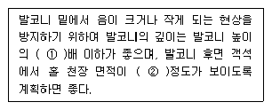
- ① 2 ② 1/3
- ① 2 ② 1/2
- ① 1.5 ② 1/3
- ① 1.5 ② 1/2
(정답률: 27%)
2과목: 건축시공
21. 건축공사시 견적방법 중 가장 정확한 공사비의 산출이 가능한 견적방법은?
- 명세견적
- 개산견적
- 입찰견적
- 실행견적
(정답률: 59%)
22. 프리스트레스트 콘크리트(prestressed concrete)에 대한 설명 중 옳지 않은 것은?
- 프리텐션(pre-tension)법은 강재에 인장력을 준 후에 콘크리트를 타설하는 방법이다.
- 구조물의 자중을 경감할 수 있으며, 부재단면을 줄일 수 있다.
- 화재에 강하며, 내화피복이 필요하지 않다.
- 항복점 이상에서 진동, 충격에 약하다.
(정답률: 60%)
23. 철골공사에서 공장가공 제작순서로서 옳은 것은 ?
- 원척도-본뜨기-금매김-구멍뚫기-절단-리벳치기-가조립-녹막이칠
- 원척도-금매김-본뜨기-구멍뚫기-절단-리벳치기-가조립-녹막이칠
- 원척도-본뜨기-구멍뚫기-리벳치기-금매김-절단-가조립-녹막이칠
- 원척도-본뜨기-금매김-절단-구멍뚫기-가조립-리벳치기-녹막이칠
(정답률: 46%)
24. 다음중 통계치에 의한 개산견적 결과로 가장 적절하지 못한 것은?
- 작은 방이 많은 건축물은 공사비 단가가 높아진다.
- 층고가 높을수록 면적당 단가는 상승한다.
- 시공시기의 계절에 따라 공사비는 영향을 받지 않는다.
- 기둥의 간격이 일정할 경우 공사비 단가가 낮아진다.
(정답률: 67%)
25. 표준형 벽돌 3,000장으로 벽을 0.5B쌓기할때 쌓을수 있는 면적으로 옳은 것은?
- 35m2
- 40m2
- 46m2
- 52m2
(정답률: 59%)
26. 콘크리트에서 ALC에 관한 내용으로 옳지 않은 것은?
- 기건 비중은 보통 콘크리트의 약 1/4 정도로 경량이다.
- 열전도율은 보통 콘크리트의 약 1/10 정도로서 단열성이 우수하다.
- 불연성으로 비중이 작아 내화재료로 부적당하다.
- 흡음성과 차음성이 좋다.
(정답률: 66%)
27. 건설공사의 노무형태 중 원도급자에게 직접 고용되어 잡역등의 미숙련 노무로 임금을 받는 고용형태를 무엇이라 하는가?
- 직용노무자
- 정용노무자
- 임시고용노무자
- 날품노무자
(정답률: 65%)
28. 콘크리트 공기량에 관한 다음 기술에서 옳지 않은 것은?
- 공기량은 잔골재 입도의 영향이 크다.
- 공기량은 굵은 골재 최대치수가 클수록 감소한다.
- 콘크리트 온도가 낮을수록 공기량이 감소한다.
- 단위시멘트량 증가시 공기량이 감소한다.
(정답률: 48%)
29. 지하연속벽(slurry wall)에 관한 설명으로 옳지 않은 것은?
- 차수성이 우수하다.
- 비교적 지반조건에 좌우되지 않는다.
- 소음·진동이 적고, 벽체의 강성이 높다.
- 공사비가 타공법에 비하여 저렴하고 공기가 단축된다.
(정답률: 54%)
30. 파이프구조 공사에 관한 기술 중 옳지 않은 것은?
- 파이프는 형강에 비하여 강도가 크다.
- 파이프의 부재형상이 복잡하여 공사비가 증대된다.
- 파이프구조는 대규모의 공장, 창고, 체육관, 동·식물원 등에 이용된다.
- 파이프구조는 경량이며 외관이 경쾌하나, 접합부의 절단가공이 어렵다.
(정답률: 42%)
31. 말뚝의 지지력을 확인하는데 가장 신뢰성이 있는 시험 방법은?
- 전단시험
- 재하시험
- 표준관입시험
- 지내력시험
(정답률: 31%)
32. 플라스틱재의 바닥 시공법에 관한 설명 중 옳지 않은 것은?
- 바닥이 움푹한 곳은 시멘트에 초산비닐 에멀션(emulsion)이나 합성고무 라텍스(latex) 등의 혼화제를 넣은 모르타르로 보수한다.
- 시공은 모르타르 바름후 1주간 이상 경과하고 함수율 7% 이하일 때가 적당하고 수분계로 10% 이상이면 시공해서는 안된다.
- 목조 마루바탕일 때 널의 쪽매 턱솔은 민틋, 평활하게 대패질 한다.
- 바름 바닥재의 주성분은 에멀션 또는 라텍스 계통이어서 못이나 철물에 녹막이 칠은 할 필요가 없다.
(정답률: 56%)
33. 콘크리트의 경화수축에 관한 내용으로 옳지 않은 것은?
- 골재의 성질에 따라 콘크리트의 수축량이 다르다.
- 시멘트량의 다소에 따라 일반적으로 콘크리트의 수축량이 다르다.
- 수중 또는 흙속에 있은 콘크리트는 공기 중에 있는 콘크리트보다 수축량이 적다.
- 된비빔 콘크리트 일수록 콘크리트의 수축량이 크다.
(정답률: 65%)
34. 커튼월에 대한 일반적인 검사항목으로 가장 거리가 먼 것은?
- 내풍압강도
- 층간변위에 대한 추종성
- 수밀성
- 인장강도
(정답률: 49%)
35. 고력볼트접합에 관한 기술 중 옳은 것은?
- 일군(一群)의 볼트를 조일 때는 주변부에서 중앙부로 향해서 조인다.
- 볼트 두부를 조이는 경우는 너트를 조이는 경우 보다 토크(torque)를 크게 해야만 한다.
- 마찰접합으로 마찰력이 생기는 접면(接面)은 미리 기름 등을 발라 녹이 발생하지 않도록 한다.
- 예비조임은 표준볼트장력의 30%로 한다.
(정답률: 30%)
36. 다음 중 시스템화 거푸집의 종류에 속하지 않는 것은?
- 철재 패널폼
- 갱폼(GANG FORM)
- 플라잉폼(FLYING FORM)
- 합판 거푸집
(정답률: 59%)
37. 슬래브에서 4변 고정인 경우 철근배근을 가장 많이 하여야 하는 부분은?
- 짧은방향의 주간대
- 짧은방향의 주열대
- 긴방향의 주간대
- 긴방향의 주열대
(정답률: 47%)
38. 다음 칠들의 관계 중 틀린 것은?
- 바니쉬 - 셸락
- 유성페인트 - 보일유
- 수성페인트 - 중합제
- 합성수지페인트 - 아크릴
(정답률: 43%)
39. 알루미늄 창호의 장점으로 옳지 않은 것은?
- 비중이 철의 약 1/3정도이다.
- 녹슬지 않고 사용 연한이 길다.
- 공작이 자유롭고 빗물막이 기밀성이 유리하다.
- 산 및 알칼리에 내식성이 크다.
(정답률: 57%)
40. 지반조사의 시험에 관계되는 것을 연결한 것 중 옳은 것은?
- 진흙의 점착력 - 베인시험(vane test)
- 지내력 - 정량분석시험
- 연한점토 - 표준관입시험
- 염분 - 신월샘플링(thin wall sampling)
(정답률: 57%)
3과목: 건축구조
41. 콘크리트의 압축강도가 증가할수록 감소하는 것은?
- 전단응력
- 휨응력
- 연성
- 부착응력
(정답률: 42%)
42. 정정트러스 해법 중 맞지 않는 것은?
- 크레모나(Cremona)법
- 바리뇽(Varignon)법
- 쿨만(Culman)법
- 릿터(Ritter)법
(정답률: 55%)
43. 아치(arch)에 관한 기술 중 옳지 않은 것은?
- 벽돌조에 있어서 창문 등의 개구부 위에는 아치를 틀거나 인방보를 거는 것이 원칙이다.
- 아치는 상부에서 오는 수직압력이 아치의 축선에 따라 좌우로 나누어 밑으로 직압력만을 전달되게 한 것이다.
- 아치에 원호를 쓸 때에는 줄눈이 원호의 중심에 모이게하고 부재의 하부에는 인장력이 작용되게 한다.
- 창문의 나비가 1m 정도일 때에는 평아치로 할 수도 있다.
(정답률: 35%)
44. 건축구조의 구조별 특징을 기술한 것 중 옳지 않은 것은?
- 조적식 구조는 모르타르의 강도도 중요하며 횡력에 약하다.
- 가구식 구조는 사각형으로 조립하면 가장 안정한 구조체를 이룰 수 있다.
- 조립식 구조는 부재를 공장에서 생산 가공하여 현장에 서 조립하므로 공기가 짧다.
- 일체식 구조는 비교적 균일한 강도를 가진다.
(정답률: 56%)
45. 다음 그림과 같은 보에서 고정단에 생기는 휨모멘트는?
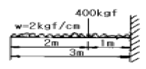
- 500 kgfm
- 900 kgfm
- 1300 kgfm
- 1500 kgfm
(정답률: 27%)
46. 목조 벽체의 가새에 대한 기술 중 옳지 않은 것은?
- 가새의 경사는 45°에 가까울수록 유리하다.
- 가새는 불안정한 사각형구조를 안정한 삼각형구조로 만들기 위해 댄다.
- 가새와 샛기둥의 접합부는 가새를 조금 따내어 맞추는 것이 좋다.
- 가새에는 하중의 방향에 따라 압축응력과 인장응력이 번갈아 일어난다.
(정답률: 40%)
47. 그림과 같은 하중을 받는 내민보의 배근으로 옳은 것은?
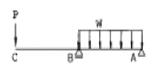
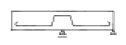
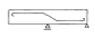
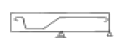
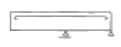
(정답률: 42%)
48. 그림은 강도설계법에서 단근 직사각형보의 응력도를 나타낸 것이다. 응력중심간 거리 (d - a/2)로 옳은 것은? (단, fck=21MPa, fy=300MPa, b=300mm, d=540mm, AS=1161mm2)
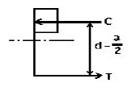
- 507mm
- 524mm
- 486mm
- 472mm
(정답률: 54%)
49. 그림에서 X축에 대한 단면 1차 모멘트(Gx) 값은?
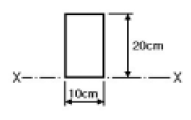
- 200cm3
- 1000cm3
- 1500cm3
- 2000cm3
(정답률: 40%)
50. 벽돌구조에 대한 설명으로 가장 적당하지 않은 것은?
- 나비 1.8m가 넘는 문꼴의 상부에는 철근콘크리트 인방보를 설치한다.
- 벽의 중간에 공간을 두고 안팎으로 쌓는 조적벽을 공간벽 또는 중공벽이라 한다.
- 벽돌벽면에 균열이 생기는 이유 중 문꼴 크기의 불합리, 불균형 배치는 시공상의 대표적 결함이다.
- 벽돌벽체 전부를 보강하는 의미로서 지붕, 처마 또는 층도리 부분에 철근콘크리트보를 둘러대는데, 이것을 테두리보라 한다.
(정답률: 22%)
51. 동바리돌 위에 축조하는 1층마루 구조에서 부재의 최하부 부터의 배열순서가 옳은 것은?
- 동바리 - 밑동잡이 - 장선 - 마룻널
- 동바리 - 멍에 - 토대 - 마룻널
- 동바리 - 토대 - 멍에 - 마룻널
- 동바리 - 멍에 - 장선 - 마룻널
(정답률: 46%)
52. 그림과 같은 보의 B점의 휨모멘트의 값으로 가장 적당한것은?
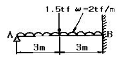
- - 11 tf·m
- - 12 tf·m
- - 13 tf·m
- - 14 tf·m
(정답률: 36%)
53. 강도설계법에서 내용이 틀린 것은?
- 콘크리트의 인장강도는 무시한다.
- 단근장방형보의 최대철근비는 균형철근비(pb)의 75% 이다.
- 휨재의 최소철근비는 1.4/fy 이다.(fy의 단위는 MPa)
- 강도설계에서는 연성파괴 보다는 취성파괴에 설계 근거를 두고 있다.
(정답률: 48%)
54. 철골철근콘크리트구조(SRC구조)에 관한 사항중 관계 없는 것은?
- SRC구조는 내진성이 뛰어나고, 철골조에 비해 내화적이다.
- 철골 골조의 주위에 철근을 배근하고 그위에 거푸집을짜서 콘크리트를 타설한 구조이다.
- 프리텐션 방식과 포스트텐션 방식이 있다.
- SRC구조는 지진이 많은 일본에서 많이 사용된다.
(정답률: 45%)
55. 그림의 철근콘크리트 옹벽의 철근 배근에서 다른 철근에 비하여 없어도 되는 것은?
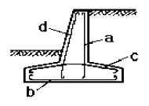
- a 철근
- b 철근
- c 철근
- d 철근
(정답률: 34%)
56. 철근 콘크리트 벽체에 관한 기술 중 옳지 않은 것은?
- 내력벽에서 수직철근의 최소 철근비는 벽체 단면적의 0.12% 이상으로 한다. (단, 설계기준항복강도 400MPa 이상으로서 D16이하의 이형철근)
- 내력벽에서 수평철근의 최소 철근비는 벽체 단면적의 0.20% 이상으로 한다. (단, 설계기준항복강도 400MPa 이상으로서 D16이하의 이형철근)
- 수직 및 수평철근의 간격은 벽두께의 4배 이하, 또한 450mm 이하로 하여야 한다.
- 두께 250mm 이상의 벽체에 대해서는 수직 및 수평철근을 벽면에 평행하게 양면으로 배치하여야 한다.
(정답률: 26%)
57. 그림과 같은 T형 보의 유효폭 B의 값으로 가장 적당한 것은? (단, 경간(ℓ)=6m, 양측 슬래브 중심간의 거리는 3m임)
- 300 cm
- 250 cm
- 200 cm
- 150 cm
(정답률: 33%)
58. 그림과 같은 단근장방형보가 평형변형도 상태에 있다. 강도설계법에 의거할 때 인장철근량으로 가장 옳은 것은? (단, fck=21MPa, fy=300MPa, a=168mm)
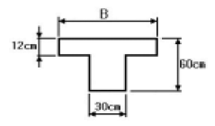
- 2000mm2
- 2570mm2
- 3000mm2
- 3500mm2
(정답률: 32%)
59. 그림과 같은 직경 d인 원목에서 켜낼 수 있는 최대 단면계수를 갖는 직사각형 단면 x : y의 비로서 맞는 것은?
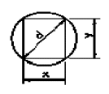
- 1 : √2
- 1 : 3
- 1 : √3
- 1 : 2
(정답률: 57%)
60. 그림에서 C점의 휨모멘트 값(MC)은?
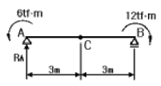
- -3 tf·m
- -6 tf·m
- -9 tf·m
- -12 tf·m
(정답률: 27%)
4과목: 건축설비
61. 배선 공사 방법에 관한 설명으로서 잘못된 것은?
- 플로어덕트 방식은 대규모 사무실 등에서 아웃트렛드등의 취출에 편리한 방법이다.
- 버스닥트방식은 대용량의 배전에는 부적당하여 간선용, 공장용으로 쓸 수 없다.
- 케이블 공사는 옥내 배선에서 금속관 공사와 동일하게 모든 장소에 시설할 수 있는 공사 방법이다.
- 합성 수지관 공사에는 주로 경질 비닐관이 사용된다.
(정답률: 48%)
62. 어떤 사무실의 난방부하가 11,700㎉/h이다. 온수 방열기를 설치하여 난방할 경우 소요 방열면적(m2 EDR)은? (단, 열매온도와 실온은 표준상태)
- 26
- 22
- 18
- 16
(정답률: 19%)
63. 가스배관에 대한 설명중 틀린 것은?
- 건축물의 관통부분이나 엘리베이터 샤프트 내를 피하도록 한다.
- 온도변화를 쉽게 받지 않는 장소로 한다.
- 부동침하가 염려되는 곳은 모래를 채워서 관을 부설한다.
- 콘크리트 슬래브내에 매설 배관으로 하여야 한다.
(정답률: 62%)
64. 동력설비의 감시 제어에서 고장표시하는 감시램프의 색은?
- 백색 램프
- 오렌지색 램프
- 적색 램프
- 녹색 램프
(정답률: 60%)
65. 급수량을 추정하는 방법이 아닌 것은?
- 급수기구의 갯수에 의한 방법
- 사용 인원수에 의한 방법
- 건물 유효면적에 의한 방법
- 통기관의 직경에 의한 방법
(정답률: 43%)
66. 배수트랩에서 봉수깊이와 관련된 설명 중 틀린 것은?
- 봉수깊이는 50-100mm로 하는 것이 보통이다.
- 봉수깊이를 너무 깊게 하면 유수의 저항이 감소된다.
- 봉수깊이를 너무 깊게 하면 통수능력이 감소된다.
- 봉수깊이가 너무 낮으면 봉수를 손실하기 쉽다.
(정답률: 57%)
67. 지상 6m 되는 곳에 점광원이 있다. 그 광도는 각 방향에 균등하게 100cd 라고 한다. 직하면의 조도로 적당한 것은?(오류 신고가 접수된 문제입니다. 반드시 정답과 해설을 확인하시기 바랍니다.)
- 2.8 Lux
- 4.7 Lux
- 6.8 Lux
- 8.7 Lux
(정답률: 25%)
68. 실내음환경의 잔향시간에 대한 설명 중 옳은 것은?
- 잔향시간은 음향청취를 목적으로 하는 공간이 음성전달을 목적으로 하는 공간보다 짧아야 한다.
- 잔향시간을 길게하기 위해서는 실내공간의 용적이 작아야 한다.
- 실의 흡음력이 높을수록 잔향시간은 길어진다.
- 영화관은 전기음향설비가 주가 되므로 잔향시간은 짧을수록 좋다.
(정답률: 44%)
69. 다음 중 냉동기, 송풍기, 펌프 등의 일반동력용으로 이용되는 배전 방식으로 가장 적합한 것은?
- 100[V] 단상 2선식
- 200[V] 단상 3선식
- 200[V] 3상 2선식
- 200[V] 3상 3선식
(정답률: 30%)
70. 급수설비에서 크로스 커넥션이란?
- 수질오염원인
- 이상압력 유발원인
- 진동발생요인
- 증발작용요인
(정답률: 46%)
71. 다음 중 분전반에 적합한 개폐기는?
- 유입차단기
- 나이프스위치
- 애자용개폐기
- 유입개폐기
(정답률: 29%)
72. 복사난방 방식의 특징이 아닌 것은?
- 열용량이 커서 예열시간이 짧다.
- 수직온도분포가 균일하고 실내가 쾌적하다.
- 대류난방에 비하여 설비비가 비싸다.
- 실온을 낮게 유지할 수 있어서 열손실이 적다.
(정답률: 46%)
73. 오물정화조에 대한 다음 기술 중 옳지 않은 것은?
- 부패조에는 공기의 공급을 충분히 한다.
- 산화조에서는 호기성균으로서 산화를 시킨다.
- 소독조에서는 약액을 넣어 살균한다.
- 여과조에서는 쇄석층을 통하여 여과시켜 고형물을 없앤다.
(정답률: 39%)
74. 다음 중 증기난방 설비와 관계 없는 것은?
- 리프트 푸팅(lift footing)
- 하트포드 접속법
- 응축수탱크
- 팽창관
(정답률: 26%)
75. 대변기에 설치한 세정밸브(Flush valve)의 최저 필요 압력은?
- 0.7kg/cm2이상
- 0.5kg/cm2이상
- 0.3kg/cm2이상
- 0.1kg/cm2이상
(정답률: 52%)
76. 난방부하 계산시 고려되지 않는 항목은?
- 상당 외기온도
- 틈새바람
- 열관류율
- 실내 건구온도
(정답률: 17%)
77. 냉난방 부하에 대한 설명 중 틀린 것은?
- 냉방부하 중 장치부하란 송풍기부하, 환기부하 등을 말한다.
- 냉방 부하중 실부하란 전열부하, 일사에 의한 부하 등을 말한다.
- 난방부하 계산시에는 인체발생열과 방위계수를 고려한다.
- 최대부하를 계산하는 것은 장치의 용량을 구하기 위한 것이다.
(정답률: 53%)
78. 에스컬레이터에 관한 설명 중 옳지 않은 것은?
- 수송능력은 엘리베이터의 10배 정도이다.
- 기다리는 시간이 없고 연속적으로 승객을 수송할 수 있다.
- 에스컬레이터의 구배는 30도 이하로 한다.
- 에스컬레이터는 장거리 대량수송을 할 때 효과적이다.
(정답률: 55%)
79. 엘리베이터의 최대 정원을 산출하는 경우 계산 적재하중W[kg]을 알았을 때 일반적으로 구하고자 하는 정원 P[인]는?
- P = W/65
- P = W/70
- P = W/75
- P = W/60
(정답률: 37%)
80. 다음 중 유효온도(실감온도:ET)와 가장 관계가 먼 것은?
- 기온
- 습도
- 열반사
- 기류
(정답률: 56%)
5과목: 건축법규
81. 2동 이상의 공동주택을 건축하는 대지의 지표면에 고저차가 있는 경우 일조 등의 건축물의 높이 산정을 위한 지표면은?
- 가장 낮은 부분의 지표면
- 가장 높은 부분의 지표면
- 각 동의 지표면
- 평균 지표면
(정답률: 28%)
82. 노외주차장의 출입구가 2개인 경우에 주차형식에 따른 차로의 최소너비로 옳지 않은 것은?
- 직각주차 : 6.0미터
- 60도 대향주차 : 5.0미터
- 45도 대향주차 : 3.5미터
- 평행주차 : 3.3미터
(정답률: 43%)
83. 노외 주차장의 내부공간 일산화탄소의 농도는 주차장을 이용하는 차량이 빈번한 시각의 전후 8시간의 평균치가 몇 ppm이하로 유지되어야 하는가?
- 30ppm 이하
- 50ppm 이하
- 80ppm 이하
- 100ppm 이하
(정답률: 47%)
84. 주차장법 시행령에 따른 부설주차장의 설치기준이 잘못된 것은?
- 숙박시설 - 시설면적 200m2당 1대
- 골프장 - 1홀당 10대
- 위락시설 - 시설면적 80m2당 1대
- 공공용시설중 방송국 - 시설면적 150m2당 1대
(정답률: 57%)
85. 거실의 바닥면적이 2,000m2인 공회당으로 150m2의 환기창이 설치되어 있을 경우 배연창의 유효면적은 얼마로 하는가?
- 100m2
- 200m2
- 3,000m2
- 필요없다.
(정답률: 39%)
86. 국토의계획및이용에관한법률시행령에서 아파트를 건축할수 있는 지역은?
- 제1종전용주거지역
- 제1종일반주거지역
- 자연녹지지역
- 제3종일반주거지역
(정답률: 59%)
87. 주요구조부를 내화구조로 해야하는 건축물의 기준으로 옳지 않은 것은?
- 의료시설 중 장례식장으로서 바닥면적의 합계가 200제곱미터 이상인 것
- 문화 및 집회시설 중 전시장으로서 바닥면적의 합계가 400제곱미터 이상인 것
- 공장으로서 바닥면적의 합계가 2,000제곱미터 이상인 것
- 건축물의 2층이 단독주택 중 다중주택으로서 바닥면적의 합계가 400제곱미터 이상인 것
(정답률: 38%)
88. 5층 이상의 층을 다음 용도로 사용하고자 한다. 피난용도로 사용할 수 있는 옥상광장 설치대상 건축물이 아닌 것은?
- 종교집회장
- 장례식장
- 숙박시설
- 판매 및 영업시설 중 상점
(정답률: 36%)
89. 건축법규정에 의한 높이 제한이 30m일 때, 공개공지를 확보한 경우 당해 건축물에 적용될 수 있는 최대높이기준은?
- 30m 이하
- 33m 이하
- 36m 이하
- 39m 이하
(정답률: 38%)
90. 지하층의 비상탈출구 유효너비와 유효높이가 맞는 것은?
- 0.65m 이상×1.2m 이상
- 0.75m 이상×1.2m 이상
- 0.75m 이상×1.5m 이상
- 0.95m 이상×1.5m 이상
(정답률: 46%)
91. 다음중 건축물에 설치하는 것 중 건축설비가 아닌 것은?
- 굴뚝
- 승강기
- 공동시청안테나
- 셔터
(정답률: 35%)
92. 국토의계획및이용에관한법령에 의한 공공시설이 아닌 것은?
- 행정청이 설치한 주차장
- 운하
- 방수설비
- 폐차장
(정답률: 50%)
93. 주거기능을 위주로 하되 상업 및 업무기능의 보완이 필요할 때 지정하는 지역은?
- 준주거지역
- 준공업지역
- 근린상업지역
- 일반상업지역
(정답률: 70%)
94. 공개공지를 확보하여야 하는 대상지역에 해당되지 않는 곳은?
- 준공업지역
- 일반공업지역
- 일반주거지역
- 준주거지역
(정답률: 32%)
95. 국토의계획및이용에관한법령상 도시관리계획의 대상에 해당되지 않는 것은?
- 용도지역·용도지구의 지정 또는 변경에 관한 계획
- 도시재개발사업에 관한 계획
- 주택재건축 사업에 관한 계획
- 기반시설의 설치·정비 또는 개량에 관한 계획
(정답률: 26%)
96. 공용건축물을 건축하고자 할 때 허가권자와 협의한 경우 건축법상 특례가 적용되는 것은?
- 건축허가 및 신고
- 설계도서 제출
- 공사감리자 선정
- 착공신고
(정답률: 47%)
97. 노상주차장의 구조·설비기준으로 부적합한 것은?
- 주간선도로에 설치하여서는 아니된다.
- 너비 6m 미만의 도로에 설치하여서는 아니된다.
- 종단구배가 3%를 초과하는 도로에 설치하여서는 아니된다.
- 주차대수 규모가 20대 이상인 경우에는 장애인전용주차 구획을 1면 이상 설치하여야 한다.
(정답률: 47%)
98. 시장·군수·구청장이 가로구역별로 건축물의 최고높이를 지정·공고할 때 고려하여야 할 사항이 아닌 것은?
- 지질 및 지형
- 당해 가로구역이 접하는 도로의 너비
- 당해 도시의 장래발전계획
- 당해 가로구역의 상.하수도 등 간선시설의 수용능력
(정답률: 26%)
99. 공동주택과 오피스텔의 난방설비를 개별난방설비방식으로 하는 경우 설치기준과 거리가 먼 것은?
- 보일러실의 윗부분에는 0.5m2 이상인 환기창을 설치 할 것
- 보일러를 설치하는 곳과 거실 사이의 경계벽은 출입구를 제외하고는 방화구조의 벽으로 구획할 것
- 보일러의 연도는 내화구조로서 공동연도로 설치할 것
- 기름보일러를 설치하는 경우에는 기름저장소를 보일러실 외의 다른 곳에 설치할 것
(정답률: 52%)
100. 건축물의 존치기간을 정하여 착공 5일전에 시장·군수 · 구청장에게 신고하여야 할 가설건축물에 해당되지 않는 것은?
- 전시를 위한 견본주택
- 농업용 고정식온실
- 공장안에 설치하는 창고용 천막
- 조립식구조로 된 경비용에 쓰이는 가설건축물로서 연면적이 15m2인 것
(정답률: 38%)